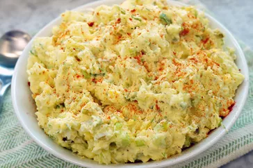

Classic Potato

Description
This classic potato salad is the best. Creamy, tangy, and crunchy, with a hint of spice and sweetness from pickles, it reminds me of my grandmother's potato salad served every Easter, or any time we had barbecue. She always dotted it with olives for a finishing touch, and a perfect briny addition. This is the best classic version of good old-fashioned, Southern-style potato salad.
Ingredients
- 5 pounds russet potatoes, peeled
- 4 large eggs
- 4 teaspoons kosher salt, or to taste, divided
- 1 cup mayonnaise
- 5 stalks green onions, sliced (white and green parts)
Steps
-
Cut potatoes into 1 1/2-inch cubes. Place in a large pot and cover with water by 2 inches. Add eggs and 3 teaspoons salt; bring to a boil over medium-high heat. Reduce heat; simmer 9 minutes.
-
Remove eggs with a slotted spoon and immediately immerse in ice water for several minutes to stop the cooking. Continue cooking potatoes until fork-tender, about 1 minute more; drain.
- Peel and chop eggs; set aside.
-
Add mayonnaise, onions, celery, pickles, sour cream, mustard, pickle juice, dill, and pepper to a large bowl; stir to combine. Stir in potatoes and eggs until well blended, mashing potatoes very slightly. Season with salt and pepper, adding up to 1 teaspoon more salt, if desired.
-
Transfer to a serving bowl, sprinkle with paprika, and garnish with olives. Cover and refrigerate at least 2 hours or overnight.